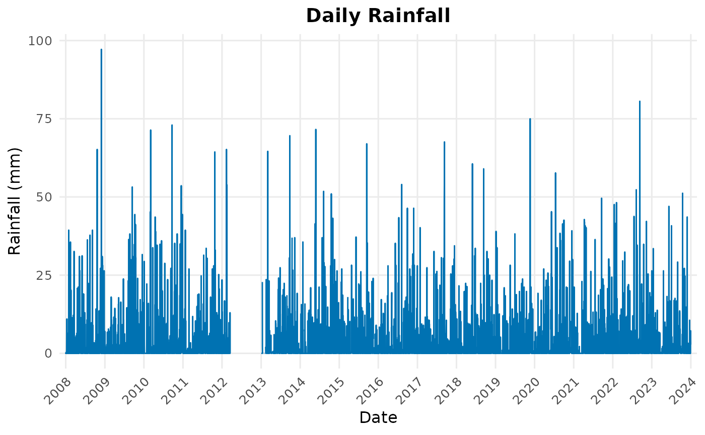
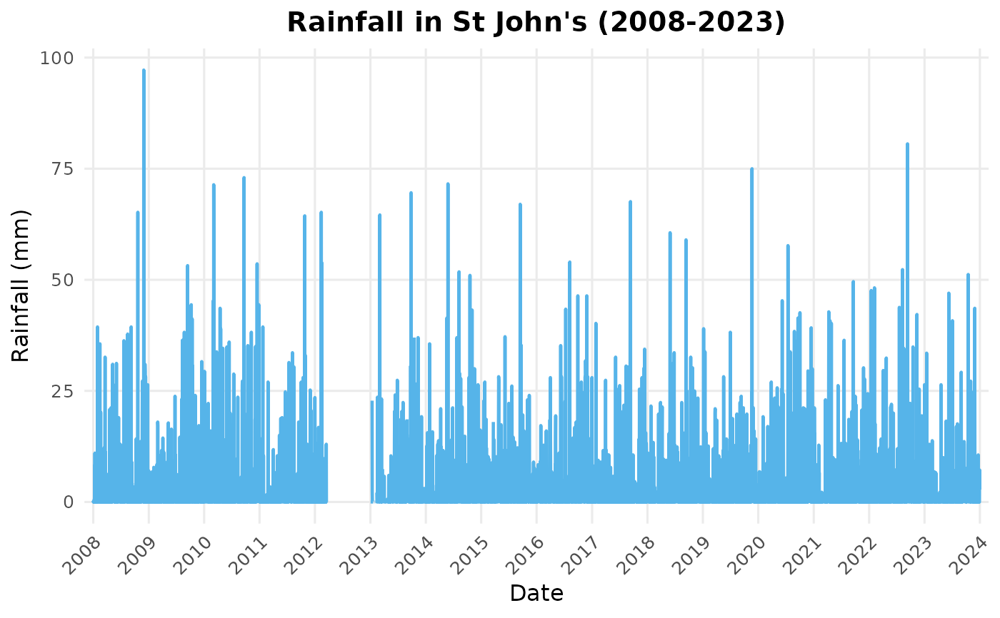

Creates a clean ggplot2 line plot of daily rainfall totals with automatic x-axis scaling (months for ≤ 1 year, years for multi-year data) and optional faceting by year.
Usage
plot_rainfall(
df,
title = "Daily Rainfall",
color = "#0072B2",
linewidth = 0.5,
facet_by_year = FALSE
)Examples
data(weather_nl)
# Auto x-axis scaling
plot_rainfall(weather_nl)

# Faceted version
plot_rainfall(weather_nl, facet_by_year = TRUE)
# Custom color and title (ASCII dash)
plot_rainfall(weather_nl, title = "Rainfall in St John's (2008-2023)",
color = "#56B4E9", linewidth = 0.8)
